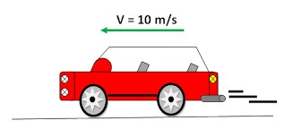

O que é MRU na Física?
O movimento retilíneo uniforme ou MRU é um dos pilares da cinemática. Os corpos que se deslocam em MRU não sofrem variação de velocidade, além de percorrerem uma trajetória retilínea, ou seja, em linha reta, sem qualquer curva ou circunferência.
No MRU, a posição do objeto varia linearmente com o tempo, ou seja, a cada intervalo de tempo igual, a distância percorrida é igual. Exemplo: considerando o carro da foto, ele está com velocidade constante de 10 m/s, isso significa que a cada 1 segundo ele percorre 10 metros.
Veja agora alguns dos principais conceitos sobre o tema:
- Velocidade média: é a razão entre o deslocamento e o intervalo de tempo em que acontece o movimento.
- Fórmula: V = S - S0 / t - t0
- V = velocidade média
- S = Posição Final Do Corpo
- S0 = Posição Inicial Do Corpo
- t = tempo final Do Corpo
- t0 = tempo inicial do corpo
- Unidade de medida de V = m/s (metros por segundo).
- Função horária da posição: A função horária da posição é uma fórmula matemática que permite saber qual a posição de um corpo no espaço depois de um tempo t de deslocamento.
- Fórmula: S = S0 + V.t
Caso precise, acesse esse link sobre movimento uniforme. Nele vc resolverá cálculos sobre o tema.